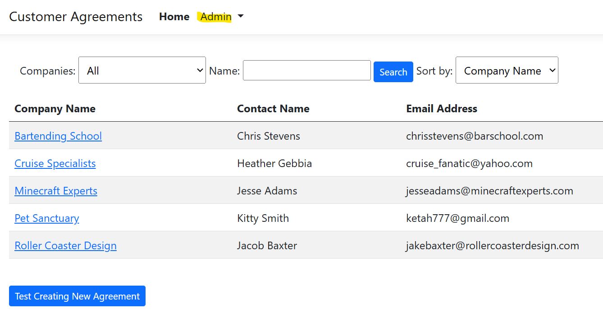
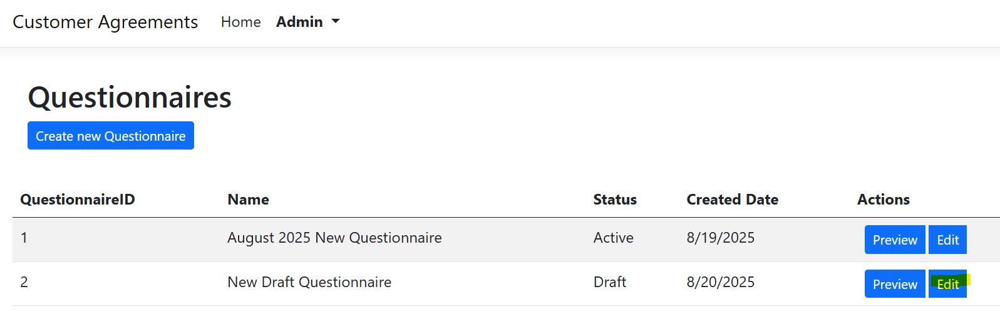
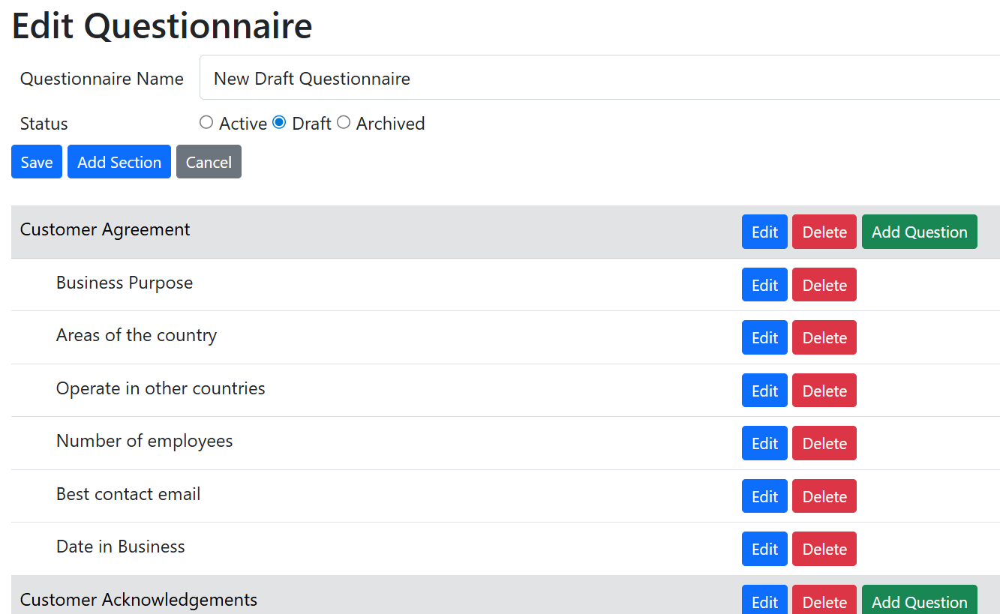
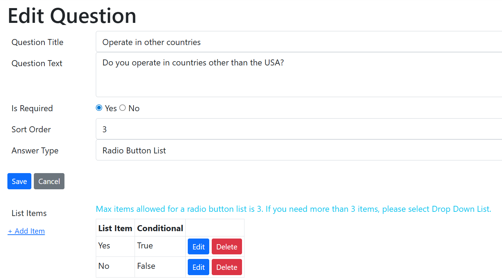
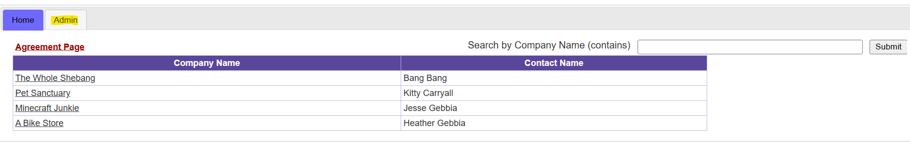
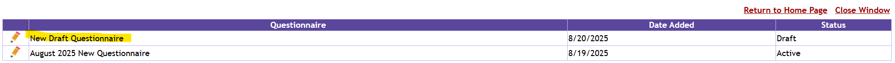
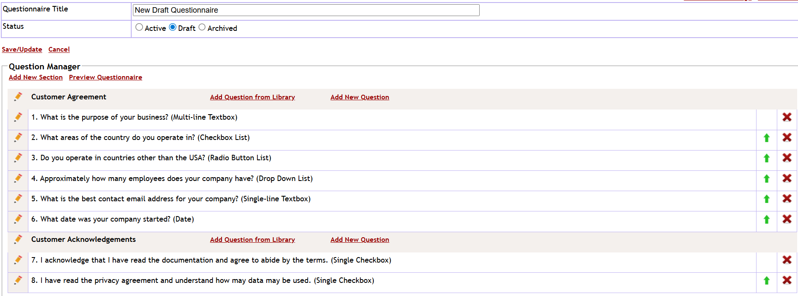
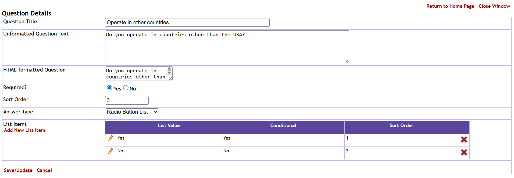

Customer Agreement Web Application
How to review in 5 minutes (for reviewers / hiring managers)
- Launch the Razor Pages demo
- Create and submit a new Customer Agreement
- Review the completed submission from the Dashboard
- Open Admin → Questionnaires to view the questionnaire builder
- Edit Questions, Sections, Lists, and Questionnaire settings
- Preview the questionnaire and compare the administrative and customer experiences
Summary
The Customer Agreement Web Application is a full-stack enterprise-style application for managing customer agreements and customizable questionnaires.
The project began as a VB.NET Web Forms application and was modernized in two phases:
first rewritten in C# Web Forms, then completely migrated to ASP.NET Core Razor Pages with Entity Framework Core and a REST API architecture.
Administrators can create and manage questionnaires, sections, questions, list values, and dependent questions. Customers can complete agreements, save drafts, submit finalized agreements, and review completed submissions.
The application is hosted in Microsoft Azure using Azure App Services and Azure SQL Database and demonstrates modern .NET development practices including API-driven architecture, feature flags, dependency injection, Entity Framework Core, and cloud deployment.
C# Web Forms Version
This version is fully functional and deployed to Azure. It represents the first modernization phase from VB.NET Web Forms to C# Web Forms.
ASP.NET Core Razor Pages + REST API Version
This is the fully modernized version of the application built with ASP.NET Core Razor Pages, Entity Framework Core, and a dedicated REST API layer. All questionnaire administration, agreement management, and reporting functionality has been migrated to API-driven architecture and deployed to Microsoft Azure.
Testing info and Screenshots (Razor Pages Version)
Dashboard: List of completed Customer Agreements. To see how the Agreement Questionnaire is set up and managed by the app owner, select Questionnaires from the Admin drop down list. To see how the completed Questionnaire functions for a customer, click Test Creating New Agreement.

Questionnaires List: Click the Edit button next to New Draft Questionnaire.

Questionnaire Manager: Select a Question to edit by clicking the Edit button to the right of the Question.

Question Details: This screen shows where an Admin User would set up a Question. They have the option to select an answer type. If the type is a list, list items are added next. List items can be conditional, for example if the answer to a radio button list is "Yes", further clarification may be required. The List Details screen has the option to add a dependent question. Feel free to add/edit questions and lists.

Key Features
- Customizable questionnaire builder with Sections, Questions, Lists, and Dependent Questions
- Agreement creation, draft saving, editing, submission, and review
- Administrative dashboard for managing questionnaires and completed agreements
- Search, filtering, and sorting of submitted agreements
- REST API architecture powering both public and administrative functionality
- Azure SQL Database integration using Entity Framework Core
- Feature flags with API/Database fallback support
- Azure App Service hosting and cloud deployment
Technologies Used
C#, ASP.NET Core Razor Pages, REST APIs, Entity Framework Core, SQL Server, Azure SQL Database, Azure App Services, HTML, CSS, JavaScript, jQuery, Git, GitHub
Technical Highlights
- Executed a complete modernization project: VB.NET Web Forms → C# Web Forms → ASP.NET Core Razor Pages
- Designed and implemented a REST API layer to support application functionality
- Migrated administrative pages from direct database access to API-driven architecture
- Implemented Entity Framework Core with DTO-based API communication
- Added feature flag support allowing API rollout with database fallback
- Designed reusable DTOs and controller endpoints for questionnaires, sections, questions, lists, notifications, and agreements
- Deployed multiple Azure App Services and Azure SQL Database environments
- Used Git and GitHub for source control and deployment workflows
Future Enhancements
- Microsoft Graph integration for automated email notifications
- Rich text/HTML editor for questionnaire formatting
- Export completed agreements to Excel
- Role-based security and administrative permissions
- Automated audit history and change tracking
Architecture Highlights
- ASP.NET Core Razor Pages front-end
- REST API backend using ASP.NET Core Controllers
- Entity Framework Core data access layer
- Azure SQL Database
- Azure App Services hosting
- DTO-based communication between UI and API
- Feature flags supporting gradual migration from database access to APIs
Testing info and Screenshots (Web Forms Version)
Dashboard: List of completed Customer Agreements. Select the Admin tab to manage Questionnaires, then select Questionnaire Manager.

Questionnaires List: Select New Draft Questionnaire.

Questionnaire Manager: Select a Question to edit by clicking the pencil icon to the left of the Question.

Question Details: This screen shows where an Admin User would set up a Question. They have the option to select an answer type. If the type is a list, list items are added next. List items can be conditional, for example if the answer to a radio button list is "Yes", further clarification may be required. The List Details screen has the option to add a dependent question. Feel free to add/edit questions and lists.

Agreement Form: To view or test any changes to the Questionnaire, you can click Preview Questionnaire on the Questionnaire Manager. Or go back to the Home Page, click Agreement Page to test the Active Questionnaire (this is not the draft version so it won't reflect any changes to the draft). Feel free to save and/or submit a new agreement.